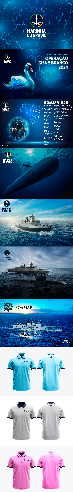

Operação Cisne Branco
Operação Cisne Branco
Projeto estrategico da operação Cisne Branco.

Sobre o projeto
Desenvolvimento de projeto gráfico e aplicação de marca para a Operação Cisne Branco, iniciativa promovida pela Marinha do Brasil em parceria com a SOAMAR. O projeto abrange a criação de peças digitais, banners institucionais e vestuário personalizado, combinando estética tecnológica e elementos marítimos para fortalecer a presença visual da operação.
Direção de design
Design de interface e layout voltado a divulgação do concurso Operação Cisne branco da Marinha do Brasil.